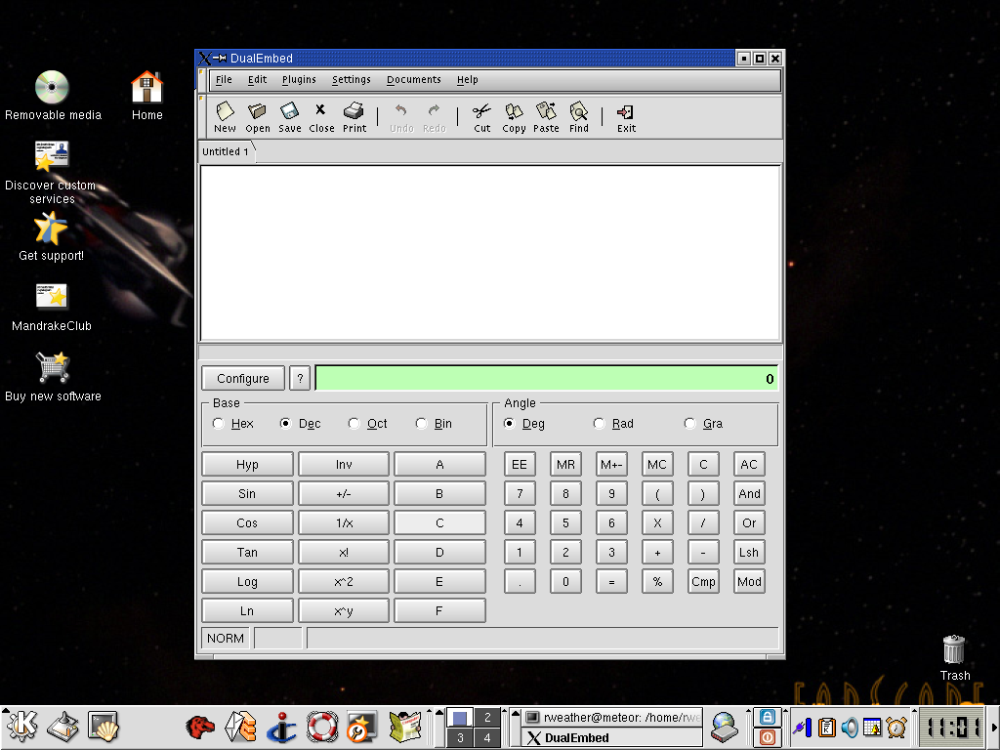

It is now possible to embed any X application as a child widget within an Xsharp application. In the screenshot below, this is done for both "gedit" (a GNOME app) and "kcalc" (a KDE app) running as two children of the same Xsharp main window. The functionality of embedding X applications is important e.g. because the next version of WinForms will have a HTML web browser control widget, and we will be able to provide this by embedding an existing third-part Free Software web browser, therefore we not need to write a web browser from scratch in C#.
You are invited to add your comments concerning this at the appropriate page of the DotGNU Wiki
Verbatim copying and distribution of this entire article are permitted in any medium or format, provided this notice is preserved.
This page is maintained by Norbert Bollow <nb@SoftwareEconomics.biz> with support from the DotGNU Website mailing list.